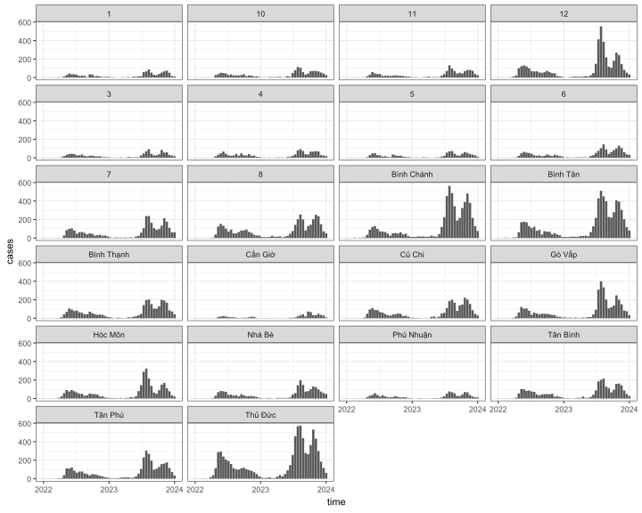
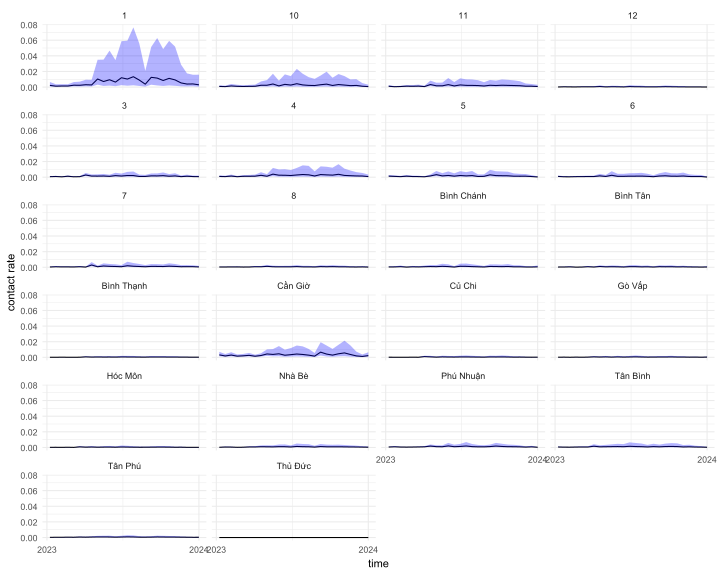

Code
library(tidyverse)
library(lubridate)
library(readxl)
library(mgcv)
library(patchwork)
library(odin)
library(tsiR)
library(janitor)
library(ggstatsplot)
invisible(Sys.setlocale("LC_TIME", "English"))Based on Du Z’s article (Du et al. 2017), which used the tSIR model to estimate the basic reproduction number (\(R_0\)) in Guangdong, China, I applied the tSIR model to calculate \(R_0\) at the district level in Ho Chi Minh City during 2023 outbreak.
I used HFMD surveillance data from 2022–2023. Although we have time-series incidence data from 2013–2023, my previous analysis showed that the performance of the tSIR model was affected by COVID-19 quarantine measures. See here. The case data were aggregated biweekly.
We obtained birth data for each district in Ho Chi Minh City from 2017–2022. I aggregated the data biweekly and used a GAM model to fit the birth trends across biweeks of each year (1–26), from biweek 1 of 2017 to biweek 5 of 2022 (week 135). The model used was: \[ birth \sim biweek_{1-26} + biweek_{1-135} \] and predictions were extended to week 182 (week 16 of 2023).
For population data, I used the 2019 census and searched for the annual population growth rate from 2019–2024. Using this, I generated a biweekly population sequence for each district.
library(tidyverse)
library(lubridate)
library(readxl)
library(mgcv)
library(patchwork)
library(odin)
library(tsiR)
library(janitor)
library(ggstatsplot)
invisible(Sys.setlocale("LC_TIME", "English"))#### birth data
hcm_birth_data <- readRDS("D:/OUCRU/hfmd/hcm_birth_data.rds")
hcm_birth_data$district_reg <- hcm_birth_data$district_reg %>%
str_replace_all(c("Quận 2" = "Thủ Đức",
"Quận 9" = "Thủ Đức"))
hcm_birth_data$district_reg <- hcm_birth_data$district_reg %>% str_replace_all(
c( "Gò vấp" = "Gò Vấp"))
hcm_birth_data$district_reg <- hcm_birth_data$district_reg %>%
str_remove("Quận|Huyện|Thành phố") %>%
trimws(which = "both")
birth_district <- hcm_birth_data %>%
group_by(district_reg) %>%
group_modify(~ .x |> filter(birth_year >= 2017)%>%
group_by(birth_week,birth_year) %>%
summarise(n = sum(n),.groups = "drop") %>%
mutate(birth_week = replace(birth_week, birth_week == 53, 52),
biweek = (birth_week + 1) %/% 2) %>%
arrange(birth_year) %>%
group_by(birth_year, biweek) %>%
summarise(biweek_birth = sum(n), .groups = "drop") %>%
mutate(biweek2 = 1:nrow(.))
)
cutpoint <- 135
birth_district2 <- birth_district %>% filter(biweek2 <= cutpoint) %>%
group_split()
modelaa <- birth_district %>% filter(biweek2 <= cutpoint) %>%
group_split() %>%
map(\(df)gam(biweek_birth ~ s(biweek) + s(biweek2),method = "REML",data = df))
newdata <- data.frame(
biweek = rep(1:26, 2024 - 2017),
biweek2 = 1:(26 * (2024 - 2017))
)
predicted_birth_district <- map2_dfr(modelaa, birth_district2, \(mod, df) {
newdata %>%
mutate(
predicted = predict(mod, newdata = newdata, type = "response"),
district_reg = unique(df$district_reg),
birth_year = rep(2017:2023, each = 26)
)
})## setup hcm map
library(sf)
library(stringi)
map_path <- "D:/OUCRU/HCDC/project phân tích sero quận huyện/"
vn_qh <- st_read(dsn = file.path(map_path, "gadm41_VNM.gpkg"), layer = "ADM_ADM_2")
vn_qh1 <- vn_qh %>%
clean_names() %>% ## cho thành chữ thường
filter(
str_detect(
name_1,
"Hồ Chí Minh"
)
)
qhtp <- vn_qh1[-c(14,21),]
qhtp$geom[qhtp$varname_2 == "Thu Duc"] <- vn_qh1[c("21","24","14"),] %>%
st_union()
qhtp <- qhtp %>% st_cast("MULTIPOLYGON")
qhtp$varname_2 <- stri_trans_general(qhtp$varname_2, "latin-ascii") %>%
tolower() %>%
str_remove("district") %>%
trimws(which = "both")
qhtp$nl_name_2 <- c("BC","BTân","BT","CG","CC","GV",
"HM","NB","PN","1","10","11","12",
"3","4","5","6","7","8","TB",
"TP","TĐ")## plot
predicted_birth_district %>%
ggplot(aes(x = biweek2,y = predicted)) +
geom_line()+
geom_point(data = birth_district2 %>% bind_rows(),aes(x = biweek2,y = biweek_birth))+
facet_wrap(~district_reg,ncol = 4,scales = "free")+
theme_minimal()
df1 <- read_excel("D:/OUCRU/hfmd/data/TCM_full.xlsx",
col_types = c("date", "numeric", "text",
"text", "text", "date", "date", "date",
"text", "text", "text"))
colnames(df1) <- c("dob", "age", "gender", "commune", "district",
"reported_date", "onset_date","adm_date",
"medi_cen","inout","severity")
df1$dob <- df1$dob %>% as_date()
df1$adm_date <- df1$adm_date %>% as_date()
df1$age1 <- interval(df1$dob, df1$adm_date) / years(1)
df1$adm_week <- as.Date(floor_date(df1$adm_date, "week"))
df1$district <- df1$district %>% str_replace_all(
c( "Quận Gò vấp" = "Quận Gò Vấp"))
df1$district <- df1$district %>%
str_remove("Quận|Huyện|Thành phố") %>%
trimws(which = "both")
case_district <- df1 %>%
group_by(district) %>%
group_modify(~ .x |> filter(year(adm_date) >= 2017 & year(adm_date) <= 2023) %>%
group_by(adm_week) %>% count() %>%
mutate(week = week(adm_week),
year = year(adm_week),
week = replace(week, week == 53, 52),
biweek = (week + 1) %/% 2) %>%
group_by(year, biweek) %>%
summarise(biweek_cases = sum(n), .groups = "drop")
)
case_birth_district_1723 <- full_join(predicted_birth_district,case_district,
by =c(
"district_reg" = "district",
"birth_year" = "year",
"biweek" = "biweek"
))## population
census2019 <- readRDS("D:/OUCRU/hfmd/data/census2019.rds")
census2019$district <- census2019$district %>%
str_replace_all(c("Quận 2" = "Quận Thủ Đức",
"Quận 9" = "Quận Thủ Đức")) %>%
str_remove_all("Quận|Huyện") %>%
trimws(which = "both")
popqh <- census2019 %>% filter(province == "Thành phố Hồ Chí Minh") %>%
group_by(district) %>% summarise(pop = sum(n))
r1920 <- 9227.6/9038.6
r2021 <- 9166.8/9227.6
r2122 <- 9389.7/9166.8
r2223 <- 9456.7/9389.7
popqh$pop20 <- popqh$pop*r1920
popqh$pop21 <- popqh$pop20*r2021
popqh$pop22 <- popqh$pop21*r2122
popqh$pop23 <- popqh$pop22*r2223
popqh$pop24 <- popqh$pop23*r2223
pop_district <- popqh %>%
pivot_longer(
cols = starts_with("pop"),
names_to = "year",
values_to = "population"
) %>%
mutate(
year = case_when(
year == "pop" ~ 2019L, # base year
TRUE ~ as.integer(sub("pop", "20", year))
)
) %>%
arrange(district, year) %>%
group_by(district) %>%
arrange(year) %>%
mutate(next_pop = lead(population),
next_year = lead(year)) %>%
filter(!is.na(next_pop)) %>%
group_by(district, year) %>%
do({
tibble(
district = .$district,
year = .$year,
biweek = 1:26,
population = seq(.$population, .$next_pop, length.out = 27)[-27] # exclude endpoint
)
})I aggregated the data into bi-weekly time steps, and there are twenty-six period \(period_1,...,period_{26})\) per year. The \(cases_t\) was adjusted to the infected part \(I_{adj,t}\) for the TSIR model by multiplying by a derivative function:
\[ \begin{align} \rho = \frac{d\hat{Y}_{cumBirths}}{dX_{cumCases}} \\ I_{adj,t} = cases_t \times \rho \end{align} \]
The cumulate number of cases \((X_{cumCases})\) and births \((Y_{cumBiths})\) were calculated by the numbers of HFMD cases \((cases_t)\) and the births. The \(\hat{Y}_{cumBirths}\) was obtained by fitting the locally weighted scatterplot smoothing (LOWESS) non-parametric regression:
\[ \hat{Y}_{cumBirths} = Lowess(X_{cumCases},Y_{cumBirths},f = 2/3) \]
pop_district2223 <- pop_district %>%
filter(year >= 2022)
case_birth_district_2223 <- case_birth_district_1723 %>%
mutate(biweek_cases = replace_na(biweek_cases, 1)) %>%
filter(birth_year >= 2022)
dt_tsir_district_2223 <- full_join(case_birth_district_2223,pop_district2223,
by =c(
"district_reg" = "district",
"birth_year" = "year",
"biweek" = "biweek"
)) %>%
select(district_reg,birth_year,biweek_cases,predicted,population)
outcome <- dt_tsir_district_2223 %>%
group_by(district_reg) %>%
group_modify(~.x %>% mutate(time = seq(2022, 2024, length.out = 52))) %>%
ungroup() %>% select(district_reg,time,biweek_cases,predicted,population) %>%
magrittr::set_colnames(c("district","time","cases","births","pop")) %>%
group_by(district) %>%
group_split() %>%
map(\(df)runtsir(data = df[,-1], IP = 2, xreg = "cumcases",
regtype = "lowess",alpha = NULL, sbar = NULL,
method = "deterministic", nsim = 1000,
family = "gaussian", link = "identity"))
bbbbb <- map(outcome, ~ data.frame(
time = .x$time,
fit = .x$res$mean,
s = .x$simS$mean,
beta = .x$contact
))
aaaaa <- dt_tsir_district_2223 %>%
group_by(district_reg) %>%
group_modify(~.x %>% mutate(time = seq(2022, 2024, length.out = 52))) %>%
ungroup() %>% select(-birth_year) %>%
magrittr::set_colnames(c("district","cases","births","pop","time")) %>%
group_by(district) %>%
# filter(time >= 2023) %>%
group_split()
data_result <- map2(aaaaa, bbbbb, ~ left_join(.x, .y, by = "time"))%>%
bind_rows()Data
data_result %>%
ggplot(aes(x = time,y = cases))+
geom_bar(stat = "identity")+
facet_wrap(~district,ncol = 4)+
scale_x_continuous(breaks = c(2022,2023,2024))+
theme_bw()+
theme(legend.position = "bottom")
Model fitting
## plot
data_result %>%
ggplot(aes(x = time))+
geom_line(aes(group = 1,y = cases,linetype = "cases reported"))+
geom_line(aes(group = 1,y = fit,linetype = "model fitted"))+
facet_wrap(~district,scales = "free",ncol = 4)+
scale_linetype_manual(values = c("cases reported" = "dashed",
"model fitted" = "solid"),
name="Analysis Type")+
scale_x_continuous(breaks = c(2022,2023,2024))+
theme_bw()+
theme(legend.position = "bottom")Contact rate
data_result %>%
filter(time >= 2023) %>%
ggplot(aes(x = time))+
geom_line(aes(y = beta.beta))+
geom_ribbon(aes(ymin = beta.betalow,
ymax = beta.betahigh),fill = "blue",alpha = 0.3)+
facet_wrap(~district,ncol = 4)+
labs(x = "time", y ="contact rate")+
scale_x_continuous(breaks = c(2023,2024))+
theme_minimal()
While the number of HFMD cases in District 1 is relatively low, the contact rate during outbreaks is notably the highest among all districts.
df <- read_csv("D:/OUCRU/hfmd/data/landuse/vnm_pd_2020_1km_ASCII_XYZ.csv")
df_sf <- st_as_sf(df, coords = c("X", "Y"), crs = 4326)
df_hcmc <- st_intersection(df_sf, qhtp)
ggplot() +
geom_tile(data = as.data.frame(st_coordinates(df_hcmc)) %>%
bind_cols(df_hcmc |> st_drop_geometry()),
aes(x = X, y = Y, fill = Z)) +
scale_fill_viridis_c(option = "viridis", name = "Population density\n(people per km²)") +
geom_sf(data = qhtp, fill = NA, color = "black", size = 0.4) +
coord_sf(expand = FALSE) +
labs(
title = "Population Density Inside Ho Chi Minh City (2020, 1km Resolution)",
x = "Longitude",
y = "Latitude"
) +
theme_minimal(base_size = 12)ggplot() +
geom_tile(data = as.data.frame(st_coordinates(df_hcmc)) %>%
bind_cols(df_hcmc |> st_drop_geometry()) %>%
filter(Z > 1000),
aes(x = X, y = Y, fill = Z)) +
scale_fill_viridis_c(option = "viridis", name = "Population density\n(people per km²)") +
geom_sf(data = qhtp, fill = NA, color = "black", size = 0.4) +
coord_sf(expand = FALSE) +
labs(
title = "Population Density Inside Ho Chi Minh City (2020, 1km Resolution)",
x = "Longitude",
y = "Latitude"
) +
theme_minimal(base_size = 12)library(terra)
my_raster <- rast("D:/OUCRU/hfmd/data/landuse/dynamic world/2023-01-01_2024-01-01_DYN_WORLD_V1.tif")
plot(my_raster, col = c("#419bdf","#387e49","#87b151","#8185c2",
"#e59635","#dfc359","#c4291c","#a39b92","#b39fe2"),
type="class",
plg=list(legend=c("Water", "Trees", "Grass", "Flooded vegetation", "Crops",
"Shrub and scrub", "Built", "Bare", "Snow and ice")))hcmc_density <- df_hcmc %>%
filter(Z > 1000) %>%
st_drop_geometry() %>%
group_by(name_2) %>%
summarise(
mean_density = mean(Z, na.rm = TRUE),
median_density = median(Z, na.rm = TRUE),
max_density = max(Z, na.rm = TRUE),
n_points = n()
) %>%
arrange(desc(mean_density)) %>%
mutate(district = name_2 %>%
str_remove("Quận|Huyện") %>%
trimws(which = "both"))
data_result %>%
# group_by(district) %>%
# summarise(mean_beta = mean(beta.beta)) %>%
left_join(.,hcmc_density,by = join_by(district)) %>%
mutate(log_den = log(mean_density)) %>%
ggplot(aes(x = log_den,y=beta.beta))+
geom_point()+
theme_minimal()+
labs(x = "Log of mean human density",
y = "beta(t)")
The \(R_t\) was derived according to the concepts of the next generation matrix. While the next generation matrix was replaced by the seasonal transmission parameters \(\beta_{1,...,26}\) in our study. The \(\beta_{1,...,26}\) were the regression coefficients of the tSIR model, and could be estimated by using the algorithm of iteratively reweighted least squares (IRLS)
\[ Rt_{1,...,26} = \beta_{1,...,26}\times \bar{S} \]
Herd immunity threshold (HIT) is the proportion of a population that must be vaccinated to become immune so that an infectious disease can become stable in that community. When the proportion is reached by vaccination, each case leads to a single new case and the infection becomes stable. We calculated the HIT by:
\[ HIT = 1 - \frac{1}{Rt} \]
rt_hit <- data_result %>%
group_by(district) %>%
filter(time > 2023) %>%
group_modify(~.x %>%
mutate(rt = beta.beta*s)) %>%
summarise(p25_rt = quantile(rt,0.25),
median_rt = median(rt),
p75_rt = quantile(rt,0.75),
hit = (1 - (1/median_rt))*100)
rt_hit <- rt_hit %>% filter(hit > 0) %>% as.data.frame()
library(knitr)
kable(rt_hit)| district | p25_rt | median_rt | p75_rt | hit |
|---|---|---|---|---|
| 1 | 5.181057 | 10.704062 | 19.018194 | 90.65775 |
| 10 | 2.811688 | 5.288984 | 7.474946 | 81.09278 |
| 11 | 2.505858 | 4.051408 | 5.057597 | 75.31723 |
| 12 | 1.922424 | 2.417594 | 3.406859 | 58.63656 |
| 3 | 1.702278 | 2.571781 | 3.436301 | 61.11645 |
| 4 | 2.584450 | 3.574817 | 5.511720 | 72.02654 |
| 5 | 1.769346 | 2.530836 | 3.486931 | 60.48737 |
| 6 | 2.226285 | 3.011215 | 3.900894 | 66.79081 |
| 7 | 2.356067 | 2.972081 | 4.089846 | 66.35354 |
| 8 | 1.618056 | 2.350634 | 3.129286 | 57.45828 |
| Bình Chánh | 2.824292 | 4.018811 | 5.023054 | 75.11702 |
| Bình Thạnh | 3.087578 | 5.371727 | 6.608702 | 81.38401 |
| Bình Tân | 2.377875 | 3.345409 | 4.560535 | 70.10829 |
| Cần Giờ | 1.741731 | 2.543073 | 3.685242 | 60.67749 |
| Củ Chi | 2.656621 | 4.650120 | 7.328248 | 78.49518 |
| Gò Vấp | 2.775346 | 3.286195 | 4.467266 | 69.56967 |
| Hóc Môn | 2.410432 | 3.846697 | 5.386281 | 74.00367 |
| Nhà Bè | 2.650263 | 3.746345 | 4.854769 | 73.30732 |
| Phú Nhuận | 2.022882 | 2.563387 | 3.186873 | 60.98911 |
| Thủ Đức | 1.900082 | 2.845778 | 3.392701 | 64.86022 |
| Tân Bình | 2.433386 | 3.609762 | 4.668092 | 72.29734 |
| Tân Phú | 2.154922 | 2.764867 | 3.901688 | 63.83189 |
library(ggdendro)
library(patchwork)
beta_2023_district <- data_result %>%
filter(time > 2023) %>%
select(district,beta.time,beta.beta) %>%
pivot_wider(names_from = beta.time,values_from = beta.beta)
beta_2023_district <- column_to_rownames(beta_2023_district, var = "district")
d <- stats::dist(beta_2023_district)
treeC <- hclust(d, method="ward.D2")
dg <- as.dendrogram(treeC)
ddata_analytes <- dendro_data(dg, type = "rectangle")
HAC_district <- ggplot() +
geom_segment(
data = segment(ddata_analytes),
aes(x = x, y = y, xend = xend, yend = yend),
position = position_nudge(x = -0.5)
) +
coord_flip(clip = "off") +
scale_y_reverse() +
scale_x_continuous(limits = c(0, 22), expand = c(0, 0)) +
theme_dendro() +
theme(plot.margin = unit(c(0, 0, 0, 0), "mm"))
geom_text(
data = label(ddata_analytes),
aes(x = x, y = -1, label = label),
size = 3.5, color = "#444444", vjust = 2, angle = 0, hjust = 0
)
disaaa <- label(ddata_analytes)[3] %>% as.data.frame() %>% pull(label) %>% as.character()
heatmap_r0 <- data_result %>%
group_by(district) %>%
group_modify(~.x %>% mutate(r0 = beta.beta*s,
beta.time = beta.time*2)) %>%
bind_rows() %>% filter(time > 2023) %>%
ggplot(aes(x = as.factor(beta.time),
y = factor(district,levels = disaaa),
fill = beta.beta)) +
geom_tile()+
# scale_fill_paletteer_c("grDevices::Inferno")+
scale_fill_gradient(low="yellow", high="red",
name = "beta(t)")+
scale_y_discrete(position = "right")+
scale_x_discrete(name = "Week")+
theme_minimal()+
theme(legend.position = "bottom",
axis.title.y = element_blank(),
axis.text.x = element_text(size = 10),
axis.text.y = element_text(size = 10),
legend.key.width = unit(2, "cm"))
ca <- dt_tsir_district_2223 %>%
group_by(district_reg) %>%
group_modify(~.x %>% mutate(time = seq(2022, 2024, length.out = 52))) %>%
ungroup() %>% select(district_reg,time,biweek_cases,predicted,population) %>%
group_by(time) %>%
summarise(cases = sum(biweek_cases)) %>%
filter(time > 2023) %>% mutate(biweek = (1:nrow(.))*2) %>%
ggplot(aes(x = biweek, y =cases)) +
geom_bar(stat = "identity")+
theme_minimal()+
scale_x_discrete(breaks = seq(2,52,by=2),expand = expansion(add = c(0, 0)))+
theme(axis.text.x = element_blank(),
axis.title.x = element_blank(),
axis.text.y = element_blank(),
axis.title.y = element_blank())up <- (plot_spacer()+ca)+
plot_layout(widths = c(1,2))
down <- (HAC_district + heatmap_r0 )+
plot_layout(widths = c(1,2))
up /
down +
plot_layout(heights = c(1,3))rt_2023_district <- data_result %>%
filter(time > 2023) %>%
select(district,beta.time,beta.beta,s) %>%
mutate(r_t = beta.beta*s) %>%
select(district,r_t,beta.time) %>%
pivot_wider(names_from = beta.time,values_from = r_t)
rt_2023_district <- column_to_rownames(rt_2023_district, var = "district")
d2 <- stats::dist(rt_2023_district)
treeC2 <- hclust(d2, method="ward.D2")
dg2 <- as.dendrogram(treeC2)
ddata_analytes2 <- dendro_data(dg2, type = "rectangle")
HAC_district_rt <- ggplot() +
geom_segment(
data = segment(ddata_analytes2),
aes(x = x, y = y, xend = xend, yend = yend),
position = position_nudge(x = -0.5)
) +
coord_flip(clip = "off") +
scale_y_reverse() +
scale_x_continuous(limits = c(0, 22), expand = c(0, 0)) +
theme_dendro() +
theme(plot.margin = unit(c(0, 0, 0, 0), "mm"))
geom_text(
data = label(ddata_analytes2),
aes(x = x, y = -1, label = label),
size = 3.5, color = "#444444", vjust = 2, angle = 0, hjust = 0
)
disaaa2 <- label(ddata_analytes2)[3] %>% as.data.frame() %>% pull(label) %>% as.character()
heatmap_rt <- data_result %>%
group_by(district) %>%
group_modify(~.x %>% mutate(rt = beta.beta*s,
beta.time = beta.time*2)) %>%
bind_rows() %>% filter(time > 2023) %>%
ggplot(aes(x = as.factor(beta.time),
y = factor(district,levels = disaaa),
fill = rt)) +
geom_tile()+
# scale_fill_paletteer_c("grDevices::Inferno")+
scale_fill_gradient(low="yellow", high="red",
name = "R(t)")+
scale_y_discrete(position = "right")+
scale_x_discrete(name = "Week")+
theme_minimal()+
theme(legend.position = "bottom",
axis.title.y = element_blank(),
axis.text.x = element_text(size = 10),
axis.text.y = element_text(size = 10))
ca <- dt_tsir_district_2223 %>%
group_by(district_reg) %>%
group_modify(~.x %>% mutate(time = seq(2022, 2024, length.out = 52))) %>%
ungroup() %>% select(district_reg,time,biweek_cases,predicted,population) %>%
group_by(time) %>%
summarise(cases = sum(biweek_cases)) %>%
filter(time > 2023) %>% mutate(biweek = (1:nrow(.))*2) %>%
ggplot(aes(x = biweek, y =cases)) +
geom_bar(stat = "identity")+
theme_minimal()+
scale_x_discrete(breaks = seq(2,52,by=2),expand = expansion(add = c(0, 0)))+
theme(axis.text.x = element_blank(),
axis.title.x = element_blank(),
axis.text.y = element_blank(),
axis.title.y = element_blank())up <- (plot_spacer()+ca)+
plot_layout(widths = c(1,2))
down <- (HAC_district_rt + heatmap_rt )+
plot_layout(widths = c(1,2))
up /
down +
plot_layout(heights = c(1,3))cut <- cutree(treeC, k=5) %>% as.data.frame() %>%
rownames_to_column(var = "district")
colnames(cut) <- c("district","cluster")
cut %>%
mutate(district2 = stri_trans_general(cut$district, "latin-ascii") %>%
tolower() %>%
str_remove("district") %>%
trimws(which = "both")) %>%
# filter(district != "Thủ Đức") %>%
left_join(qhtp, ., by = join_by(varname_2 == district2)) %>%
ggplot() +
geom_sf(aes(fill = factor(cluster)),show.legend = T)+
scale_fill_discrete(name = "Cluster",na.translate = FALSE)+
geom_sf_text(aes(label = nl_name_2),size=2.5)+
theme_void()There was a geographical relationship between districts within each cluster.
Based on patterns of biweekly \(R_t\), I applied hierarchical clustering. Then, based on the dendrogram and I cut the tree to 5 branches and plotted the results on a map to explore potential geographical relationships between clusters.
cut2 <- cutree(treeC2, k=7) %>% as.data.frame() %>%
rownames_to_column(var = "district")
colnames(cut2) <- c("district","cluster")
cut2 %>%
mutate(district2 = stri_trans_general(cut2$district, "latin-ascii") %>%
tolower() %>%
str_remove("district") %>%
trimws(which = "both")) %>%
# filter(district != "Thủ Đức") %>%
left_join(qhtp, ., by = join_by(varname_2 == district2)) %>%
ggplot() +
geom_sf(aes(fill = factor(cluster)),show.legend = T)+
scale_fill_discrete(name = "Cluster",na.translate = FALSE)+
geom_sf_text(aes(label = nl_name_2),size=2.5)+
theme_void()The patterns of \(R_0\) for each district correspond well with the incidence data.
District 1 has the highest median \(R_0\), despite having a relatively low number of reported cases. This can be explained by its high contact rate, due to its role as the central area of Ho Chi Minh City, with a large volume of travelers, numerous schools, hospitals, and public activities. Nearby districts, such as Districts 10 and 4, have the second-highest median \(R_0\) values. This reflects a geographical relationship among districts in the central area.
This analysis provides a clearer picture of the HFMD burden in Ho Chi Minh City, highlighting how transmission intensity is concentrated in areas with high population mobility and dense infrastructure.
In this analysis, I estimated two key epidemiological parameters—\(R_0\) and the herd immunity threshold (\(HIT\))—for HFMD transmission in 2023. This information can support decision-making in controlling and preventing HFMD outbreaks. For example, if an HFMD vaccine is implemented in Ho Chi Minh City, we can prioritize District 1 and nearby districts that share similar patterns identified through clustering analysis. Our target would be to achieve the herd immunity threshold in each district.
For the clustering analysis, we grouped districts with similar infectious patterns, the results show the geographical relationships. This approach can help guide more effective prevention and control strategies by targeting groups of districts rather than treating them individually.